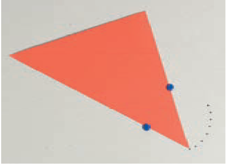
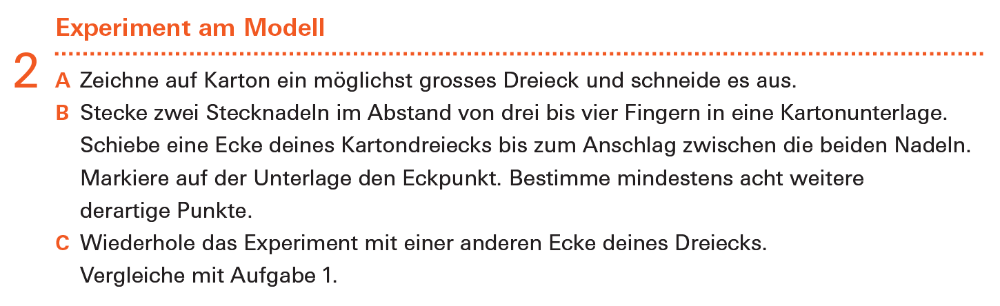
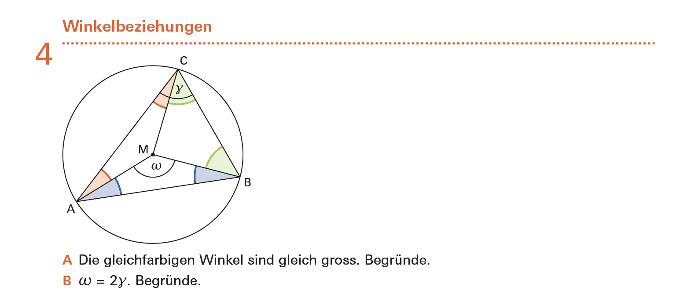
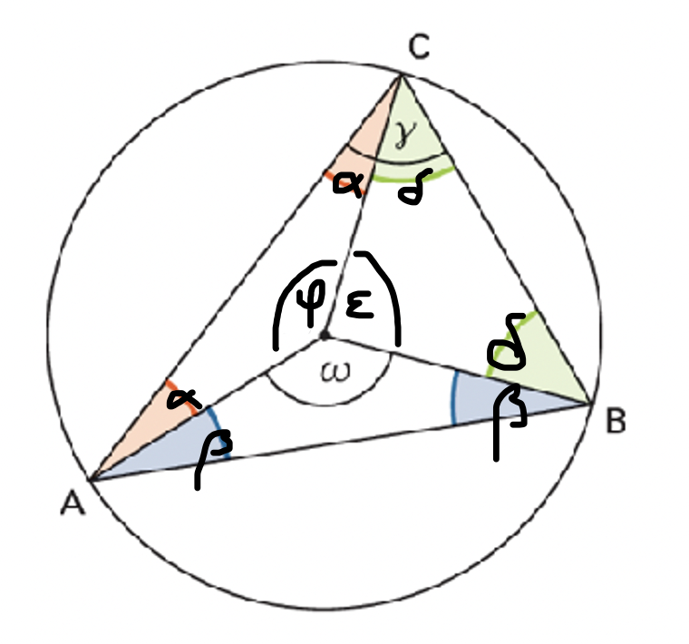

6 Punkte
Die abgebildete Aufgabe stammt aus der Lernumgebung «Kreise – Linien – Winkel» aus dem Mathbuch 2.


(a) Was ist das Ziel dieser Aufgabe? Welche Handlungskompetenzen des Lehrplan 21 stehen hier im Vordergrund? (Mit Begründung!)
Die SuS sollen in dieser Aufgabe den Fasskreisbogen als Ortslinie enaktiv bestimmen. Durch die vorgegebene Konstruktionsanleitung der Punkte soll bewusst werden, dass alle Punkte dieselbe Eigenschaft erfüllen. Ich betrachte eine durch die Stecknadeln fest vorgegebene Grundlinie, von der aus alle erzeugten Punkte im festen Winkel erscheinen. Erkenntnis ist, dass alle Punkte zusammen eine Kreislinie bilden.
Achtung: Es wird hier KEIN Umkreis des vorgegebenen Dreiecks bestimmt!
Die Aufgabe lässt sich in erster Linie dem Handlungsaspekt «Erforschen und Argumentieren» zuordnen. Sie experimentieren an einem Modell. Der Zusatz – Vergleiche mit Aufgabe 1 – regt an, die erhaltenen Ergebnisse in einen Kontext zu bringen. Auch wenn hier nicht direkt dazu aufgefordert wird, kann in dieser Aufgabe auch das «Argumentieren» angeregt werden, wenn die SuS dazu aufgefordert werden, ihre Erkenntnisse zu begründen.
Der Handlungsaspekt «Operieren und Benennen» steht hier nicht im Fokus. Die SuS müssen nicht notwendigerweise mit Fachbegriffen argumentieren. Insbesondere wird der Begriff Peripheriewinkel oder Fasskreisbogen auch nicht eingefordert. Die enaktive Handlung und das Einzeichnen der Punkte kann zwar als Operieren angesehen werden, steht aber in diesem Fall nicht in direktem Bezug mit dem Operieren mit dem mathematischen Gegenstand.
Der Handlungsaspekt «Mathematisieren und Darstellen» wird ausschliesslich in Bezug auf das Darstellen in der Aufgabe bedient, insbesondere wenn eine Verbalisierung der Erkenntnisse eingefordert wird.
(b) In der Aufgabe erzeugen die Schülerinnen und Schüler eine Ortslinie. Geben Sie eine mathematisch präzise Definition des Begriffs «Ortslinie» an. Um welche Ortslinie handelt es sich hier, und wie lässt sie sich mathematisch charakterisieren?
In der Geometrie bezeichnet man eine Punktmenge, die durch eine bestimmte Eigenschaft charakterisiert ist, als geometrischen Ort. Beispielsweise ist der geometrische Ort aller Punkte, die von einem gegebenen Punkt $M$ einen Abstand von weniger als 5 cm besitzen, das Innere der Kreisscheibe um $M$ mit $r=5$ cm. Stellen diese Punktmengen – im Unterschied zu einer Fläche oder einer ungeordneten Punktmenge – eine Linie dar, so spricht man von Ortslinien.
Die hier erzeugte Ortslinie ist der Fasskreisbogen. Es handelt sich dabei um den geometrischen Ort aller Punkte, von denen aus eine gegebene Strecke $\overline{AB}$ unter einem bestimmten Winkel $\alpha$ erscheint. In diesem Fall wird die feste Strecke durch die Verbindung der Stecknadeln visualisiert bzw. erzeugt. Der Winkel $\alpha$ ist der feste Winkel des einen Dreieck-Eckpunktes.
Im weiteren Verlauf lösen die Schülerinnen und Schüler die folgende Aufgabe.

(c) Lösen Sie die Aufgaben und erklären Sie, wie diese Aufgabe mit der oben abgebildeten Aufgabe 2 zusammenhängt.
- A
- In der Zeichnung handelt es sich bei dem dargestellten Kreis um den Umkreis des Dreiecks $ABC$. Damit ist der Mittelpunkt $M$ von allen drei Punkten gleich weit entfernt. Die Dreiecke $ABM$, $BCM$ und $CAM$ sind damit alle gleichschenklig. Damit sind die eingezeichneten Winkel gleich gross.
- B
- Es gilt:

\begin{align*} \omega&=360^\circ-\varphi-\epsilon&&\text{die drei Winkel bilden einen vollen Kreis}\\ &=360^\circ-(180^\circ-2\alpha)-(180^\circ-2\delta)&&\text{wegen A und Winkelsumme im Dreieck }180^\circ\\ &=2(\alpha+\delta)&&\text{Termumformungen}\\ &=2\gamma&&\text{da }\alpha+\delta=\gamma \end{align*}
Zusammenhang: In beiden Aufgaben geht es um die mit dem Fasskreisbogen verbundene Ortsaussage.
Ortslinien sind mit Ortsaussagen verbunden, die zwei Richtungen beinhalten. Im Falle des Fasskreisbogens ist das:
- Alle Punkte, die mit fest vorgegebenen Punkten $A$ und $B$ einen festen Winkel $\gamma$ einschliessen, liegen auf einem Kreisbogen, der auch die Punkte $A$ und $B$ enthält.
- Alle Punkte, die auf einem Kreisbogen liegen, der ebenfalls die Punkte $A$ und $B$ enthält, schliessen mit den Punkten $A$ und $B$ einen festen Winkel $\gamma$ ein.
In Aufgabe 2 wurde eine Ortslinie erzeugt, bei der alle Punkte die vorgegebene Eigenschaft erhalten: Alle Punkte auf der Linie haben die Eigenschaft, dass sie zu einer vorgegebenen Linie $AB$ (Endpunkte als Stecknadeln visualisiert) den gleichen Winkel einschliessen. Wir beobachten, dass diese Punkte einen Kreisbogen bilden. Damit wird (1) zwar nicht bewiesen, aber experimentell von den SuS entdeckt. In Aufgabe 4 wird die Richtung (2) bewiesen.